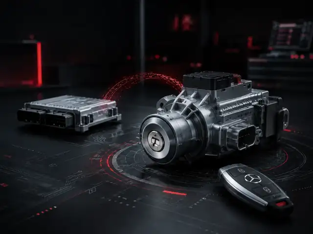

Mercedes EZS / ELV
Servicio técnico para sistemas de arranque electrónico Mercedes: diagnosis, reparación, sustitución, clonación y programación.

01
QUÉ HACEMOS
Sistema de arranque
- Diagnóstico EZS / ELV
- Reparación electrónica
- Clonación / sustitución
- Programación de datos
02
CUÁNDO SOLICITARLO
Problemas frecuentes
- No da contacto
- ELV no libera
- Llave no reconocida
- Módulo EZS averiado
03
QUÉ ENVIAR
Material necesario
- EZS / ELV afectado
- Llave cuando proceda
- Donante si existe
- Datos del vehículo
TIEMPO HABITUAL24–72 h
ESPECIALIDADMercedes EZS / ELV
COBERTURAGarantía técnica
CÓMO FUNCIONA
Proceso Mercedes
PASO 01
Describe el síntoma
Modelo, año, componente y comportamiento del sistema.
PASO 02
Envía el conjunto
Se confirma previamente qué componentes y llaves necesitamos.
PASO 03
Diagnóstico y reparación
Trabajamos sobre EZS/ELV y verificamos los datos asociados.
PASO 04
Retorno listo
El material se devuelve tras la comprobación final.
FAQ
Preguntas frecuentes
¿Hay que enviar EZS y ELV siempre?
No siempre. Depende del síntoma y del tipo de trabajo; se confirma antes del envío.
¿Necesitáis la llave?
En determinados procesos sí. El conjunto exacto a enviar se indica tras revisar el caso.
¿Se puede montar un donante?
Cuando la generación y la compatibilidad lo permiten, se puede realizar sustitución o clonación según el caso.